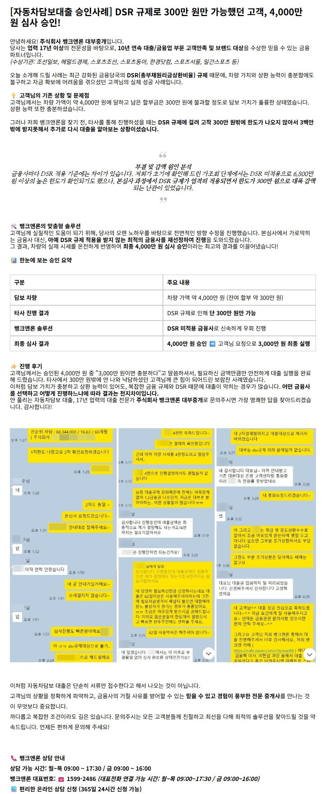
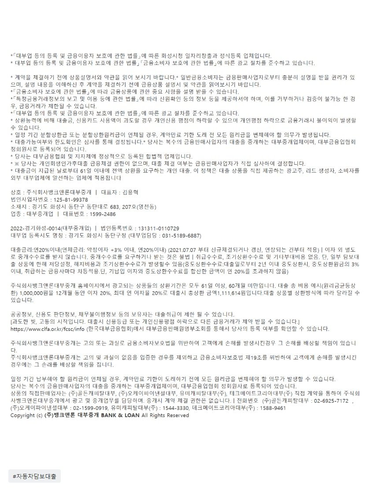

[자동차담보대출 승인사례] DSR 규제로 300만 원만 가능했던 고객, 4,000만 원 심사 승인!

? 공식 홈페이지에서 신청하기 https://www.banknloan.kr/대출상품/자동차담보대출
? 카톡 채널 실시간 상담 https://pf.kakao.com/_pxeDsM
https://cafe.naver.com/cityman88/310558
원본 백업에 없거나 외부 접근이 제한된 이미지입니다.
[자동차담보대출필독사례모음] 자동차담보대출 매니저 사례 모음 (자동차담보대출 필독!!)
개인회생 중 무직자, 14년식 26만km 차량으로 담보대출 가능할까? 불가할까? https://cafe.naver.com/cityman88/311461 [자동차담보대출] 주부...
https://www.youtube.com/watch?v=PDxvfq_jwhw&feature=youtu.be

https://cafe.naver.com/cityman88/311712